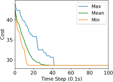
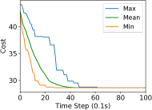
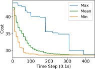
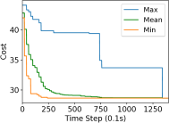

Swarm Relays: Distributed Self-Healing
Ground-and-Air Connectivity Chains
Supplementary Material
This supplementary material presents additional details as well as experimental results that provide more insights on the proposed method. In particular, Section I presents the task allocation algorithm, failure recovery algorithm and inter robot communication. Section II discusses additional simulation experiments evaluating robustness to noise.
I Detailed Methods
At initialization, all the robots are in state unassigned. In state unassigned, the robots respond to parent requests and perform periodic broadcasts to indicate their availability. On accepting parent requests, the robots switch from unassigned to chain construction to act as networkers. All the robots in state unassigned switch to task allocate whenever the available task set() is non empty, and return to unassigned when all the tasks are assigned to a worker robot. Immediatly after assignment of a new task, the workers start electing networkers to reach the target while preserving end-to-end connectivity. Any intermediate robot failures are counteracted by a chain bridging algorithm that recovers broken links in the chain. Figure 1 shows the high level state machine of the proposed approach.
The task allocation problem considered in this work corresponds to a Single Assignment problem (SA), where any give free robot can only be assigned one task . Task allocation is the initial step that is performed before the actual execution of the chain construction. Each free robot computes a local bid and updates the Virtual Stigmergy (VS) [2] to reach a consensus on the task assignment. Virtual Stigmergy is a pair, fully decentralized shared memory that uses Lamport clocks for maintaining the most recent value associated with a key.
I-a Task Assignment Algorithm
Initially, the sets , and contain the list of tasks. The task assignment algorithm on each robot, also referred to as the gradient algorithm shown in Listing 1, locally computes one bid for each task in based on its distance from it, and conditionally updates the Virtual Stigmergy (VS).
For each task, there is an associated key in the VS in which a bid value is updated. For each , the robot computes its bid, checks if there is a bid already in the VS, updates the bid if the local bid is lower. This process of computing and checking the bid is done every k steps for a small fixed bidding period. We refer to this parameter k as the synchronization parameter. The parameter k and the bidding period is determined by an upper bound based on the communication error, number of robots, the network topology and the convergence time of VS. When two robots update the VS at the same time, they might have an identical timestamp and cause a conflict. A conflict is resolved by choosing the lowest bid that contains an identical time stamp and its value is propagated automatically by the VS (see [2]). Should the number of robots () be insufficient to perform the available tasks, the root robot monitors and delays the auction until a sufficient number of robots are available. After the bidding period for a particular task, the winner is elected as the worker. An identically bidding is initiated when a root robot needs to be elected.
Note that we use a root robot because, for robotic swarms deployments in real world missions in the foreseeable future, we believe an operator will be required to monitor the swarm (or be aided by it). The operator observes the actions of the swarm and issues high level commands. As an example, consider an emergency response scenario, in which a first responder would use the swarm to obtain situational awareness and assign new high-level tasks. The operator could also be dynamically assigning new targets to the robots, as in our outdoor field experiments (discussed in the manuscript). We assume the operator is a member of the swarm so the interface connecting to the operator (e.g. a ground station) is also a swarm member, assigned with the root role. When no operator is present and multiple robots can act as the root, we use a gradient algorithm to achieve consensus on the identity of the root. This last case is possible when the swarm is completely autonomous.

In this work, we consider the local reward of the task allocation algorithm to be the distance to the target , this serves as an approximation of the actual cost. The actual cost of a robot reaching the target will always satisfy . In certain complex environments, it might be favorable to compute a path for a given target and use the length of the path as the reward. The reward computed based on the path will be closer to the actual cost.
In the presence of extreme packet drop rates, the task allocation algorithm could elect multiple robots as the worker. In such scenarios, the elected worker robots (on detection of conflicts) negotiate to avoid the conflict. We believe that, if a conflict arises in the task assignment, both robots might be proceeding towards the same mission and eventually get in communication range to negotiate. It is favorable to avoid initiating another round of bidding because the earlier task assignment might have failed due to packet drops or an inability to communicate.
I-B Failure recovery algorithm
The failure recovery algorithms is initiated, when a robot in a chain determines that its parent or child is unresponsive for a prolonged period of time. This unresponsive time is a constant design parameter based on communication error (packet drop). Listing 2 illustrates the failure recovery procedure. The listing contains two routines, one for the parent and the other for the child . When a child becomes unresponsive, the robot turns into a temporary worker until it finds an appropriate robot to re-bridge the connection. If no appropriate robot is found, then the temporary worker becomes permanent and performs the task at the appropriate location. During both routines, the robots will try to identify any new potential connections using the local chain link information and safe neighbor set . The robots also monitor the safe neighbor set to determine the presence of new neighbors to link with. All the identified potential connections will be sent a new request to join the broken chain. If none of the potential connections accepts the request, the robots will execute or in search of new potential connections. Once a potential connection responds, the robots label this connection as either parent or child and continue the mission.
I-C Communication
| Message Type | Size (Bytes) | ||||
| ID | Key | Value | Extra | Total | |
| Request/Response(RR) | 1 | 1 | 4 | 0 | 6 |
| Status(S) | 1 | 1 | 4 | 0 | 6 |
| Velocity(V) | 1 | 1 | 4*4 | 0 | 18 |
| Parent Chain Links(PCL) | 1 | 1 | k*1 | 0 | 2+k*1 |
| Child Chain Links(CCL) | 1 | 1 | k*1 | 0 | 2+k*1 |
| Virtual Stigmergy(VS) | 1 | 2 | 4+4*6 | 2+2 | 35 |
The information flow in the swarm is gossip-based and the messages are distributed via local broadcast. The level of communication is therefore . Tab. I shows the types of messages exchanged by the robots, their size and composition. “ID” indicates the class of the message, “key” is a unique identifier of the message and “extra” indicates the additional information to maintain data consistency, like timestamps (Lamport clocks) and the ID of the last robot that modified the message value. Request/response (RR) messages are target messages to a given neighbor. The primary role for RR messages is to send requests to free robots and add them as networkers to the chain. RR messages are also used during the failure recovery routines to request a robot to commit and join a broken chain.
Status messages are heartbeat messages to monitor a robot and identify the free robots in the neighborhood (to add an edge or recover a broken link). The status messages also act as a means to detect robot failures. When a robot does not receive a heartbeat message for a given period of time from its parent and child, this robot is declared unresponsive. A failure recovery routine is initiated to regain connectivity as in Section I-B. Velocity messages are used for obstacle avoidance with Reciprocal Velocity Obstacles (RVO) [3].
The parent chain link is a sequence of IDs built from the root towards the worker. Each robot receives the chain link from its parent, shortens the message by IDs, and appends its own ID before sending it to its child. The child chain link is a sequence of IDs, built in the opposite direction of the parent strand: from worker to root, truncated by entries. The parameter is introduced for scalability when the number of robots in the chain increases. The primary function of the chain link messages are to handle failures. When a failure occurs, the robots make use of the chain link messages to identify the robots involved in a broken connection. Virtual Stigmergy (VS) messages are primarily used to ensure consistency of the global path plan. The decomposition of the message is: path point id (4 bytes), dimension key (x,y,z: 4 bytes) and the actual value of the point (x,y,z: 4 bytes). During the task allocation phase, VS messages are used by the robots to agree on a global bid for the tasks. VS messages used in bidding can be decomposed as: task id (4 bytes) and bid for the task (4 bytes).
I-D Bandwidth Usage
Fig. 2 shows the average size of messages by message type, sent by robots participating in a chain and the available bandwidth for relaying information (for other mission-related tasks) assuming a constrained maximum bandwidth of 5 kbps (e.g. a very long distance Xbee connection) during one of the experimental runs with 4 equidistant targets at 10m. It is worth noting that the total allowable message size per time step was set to 150 bytes during our evaluations and the algorithm converges with this bandwidth. During the task allocation phase, the gradient algorithm sends periodic messages to synchronize the bids (every k steps), causing the bandwidth usage to exhibit periodic spikes. The bandwidth peaks to the maximum allowable bandwidth right after the path injection to the swarm and until the global path queries form all members fade out. Most of the other messages exhibit an even consumption of bandwidth except for the chain link messages. The chain links messages starts to increase as the number of robots in the chain increase and stabilizes when the chain reaches the target.

| k=1 | k=10 | k=20 | |
|---|---|---|---|
| D=0.0 | |||
|  |  |
 |
|
| D=0.5 | |||
|  |  |
 |
|
| D=0.9 | |||
 |
 |  |

I-E Discussion on Convergence
The proposed control architecture uses a decentralized shared memory system for exchanging the path computed from one of the chosen robots and the convergence time depends on the time taken by this underlying mechanism. In our work, we use Virtual Stigmergy, a key, value tuple information sharing mechanism. Virtual Stigmergy is bio-inspired and provides demonstrated fast convergence in noisy and dynamic topologies for thousands of robots. For more information, we refer the reader to [2] for details, and to [1] for formal modelling. Virtual Stigmergy uses opportunistic synchronization: robots synchronize a particular tuple with their neighbors only when that entry is needed. We control the robots to ensure that they do not break connectivity, while Virtual Stigmergy guarantees converge of the information as they proceed towards the target. As long as there exists consensus on the path, then it can be ensured that the robots will eventually reach the assigned target.
The time-of-completion performance of our method depend on the following four parts:
-
Election of robots.
-
Path computation,
-
Path sharing, and,
-
Chain Construction.
The election of robots (1) is limited by a fixed time-out, which we refer to as the bidding time. The path computation (2) is also upper bounded by a small fixed time (the planning time). The path sharing (3) and the chain construction (4) times are variables that are impacted by several factors like number of robots needed in the chain, the communication topology, and the structure of the environment. We study these variables in the first set of experimental results reported in main manuscript (Figures 5 and 7). By normalizing across scenarios, we show that our strategy uses about 20% more time without obstacles (25% with obstacles) than motion only. To the best of our knowledge, our work is the first combining all these elements to solve the exploration of complex environments while maintaining connectivity.
Ii Additional Experiments
We performed three sets of simulation experiments to further evaluate the performance of the proposed method under various noise levels. At first, we discuss the results of these experiments and then discuss the convergence time with real-robot experiments.
During the experimental evaluations discussed here, we adapted the same simulation parameters as the experiments discussed in the paper. Repeating each of the experimental settings 30 times with random robot placement, we evaluate the performance in the presence of noise. Here we use two equidistant targets uniformly distributed on a circle (r = 10m) and set .
Ii-a Communication Errors
We study the effect of packet drop on the convergence time by simulating packet drop rates in set and use the time factor as the performance metric. Error bars in figure 3 report the min, mean, max, 5 percentiles and 95 percentiles of the time factor. As expected, the experiments reveal an increase in the amount of time to reach the targets with the increase of communication error. On average, the robots reached the targets in 33.5 seconds ( 0.159 time factor ) without packet drop and increased to 112.8 seconds ( 0.537 time factor ) with 60 % of packet drop rate. There is approximately 300% increase in the convergence time with a packet drop of 60%. This increase in the time to reach the targets can be directly attributed to the fact that the robots take more time to receive responses to requests and increase the consensus time. We conclude that the approach is able to converge with a packet drop of upto 60%.
Ii-B Sensor Noise
We simulate an additive Gaussian white noise with mean and standard deviation to the sensor measurements to evaluate the effect of sensor noise. The sensor noise is simulated by adding a random vector with the neighbor’s range and bearing measurements. This random vector is drawn from a Gaussian distribution by varying both bearing (in range ) and range in meters depending on the noise standard deviation. Figure 5 reports the time factors in presence of sensor noise. In comparison with the communication error experiments, the mean time factor does not significantly increase with sensor noise. However, the sensor noise causes variance in the convergence time. The time to reach the targets in the presence of Gaussian sensor noise () is 49.1 seconds (0.234 time factor) on average and show a standard deviation of 19.2 seconds (0.091 time factor). Overall, there is about 15% increase in convergence time in the presence of sensor noise.
Figure 4 reports the ground truth distance and a robot’s observation of its parent with different amounts of noise. With no noise in sensing, the robot is able to reach a stable distance and maintain safe connectivity. The additive sensing noise causes slight oscillations in control. It is worth noting that even with a sensing noise of std=0.6m and the safe communication distance set to 1.4m (noise random vector in range [0,0.6]m about half the safe communication distance), the robot is able to maintain safe communication distance between its parent while the worker reaches its target.
Ii-C Planning Error
We study the effect of planning errors in the chain construction algorithm by introducing a virtual obstacle in front of the two equidistant targets. The virtual obstacle placed in front of the target had a width of 1m and varying length ( m). The introduction of the virtual obstacle among the robots creates a slightly deviated initial plan and hence, introducing a planning error. Figure 6 reports the time factors in the presence of the virtual obstacles. The average time taken by the robots to the reach the targets stay about the same with a very small mismatch in the initial plan and slightly increases with the mismatch. In particular, the mean time to reach the targets is 37.2 s (0.177 time factor) with a 1m virtual obstacle and 47.5s (0.226 time factor) with a 8m virtual obstacles, this is about 14% with respect to a perfect planner.
Ii-D Performance of the Gradient algorithm
We study the performance of the gradient algorithm detailed in section I-A by varying the parameter in the algorithm and with various packet drop rates . The parameter k is called the synchronization parameter and determines the time duration between each of the bid mismatch synchronizations. For this set of evaluations, we choose a fixed scale-free topology with 100 robots as shown in figure 8. The communication range of the robots are set to 1.2m and the maximum messages size of each robot is set to 60 bytes. We assign 4 tasks to the robots at distance of 10m from the center of the deployment cluster and evenly distributed each 90 degrees. We use the total cost summation for all four tasks on each of the robots, based on the local assignment to evaluate the convergence of the algorithm.
Figure 7 reports the minimum, mean and maximum cost of the local assignment for the four tasks on the robots over various synchronization time k and packet drop rates. For k=1, the algorithm performs synchronization of the local bid every step resulting in higher bandwidth usage. The parameter k essentially allows a gossip message to be processed by a neighbor and to receive a response before further packets are broadcast, avoiding flooding the network. As it can be observed in Figure 7, a small value of k=10 allows the network to converge to the global cost faster than with k=1 when there is no packet drop. As expected, the convergence time of the cost increases with a very large drop rates of 90%. The effect of a small synchronization parameter becomes less useful with large packet drops. This essentially means that flooding the network with gossip benefits the convergence time with unreliable communication.

Ii-E Convergence time in Real robots
The box plot in Fig. 9 shows the time required by the robots in each setting to build the communication chain and reach the target. We performed 10 experimental evaluations for each of the setting shown the main manuscript (figure 8 bottom) and report the performance of the algorithm with total time to reach the targets. Ground robots took on average 100s to reach the target with a wider variability (from 80s to 150s). The heterogeneous team was faster with a median time close to 50s. Finally, the flying robots were the fastest with a median around 40s and very narrow variability due to their holonomic motion.
References
- [1] (2020) On the robustness of consensus-based behaviors for robot swarms. Swarm Intelligence. Cited by: §I-E.
- [2] (2016) A tuple space for data sharing in robot swarms. In Proceedings of the 9th EAI International Conference on Bio-inspired Information and Communications Technologies, BICT’15, pp. 287–294. Cited by: §I-A, §I-E, §I.
- [3] (2008) Reciprocal velocity obstacles for real-time multi-agent navigation. In 2008 IEEE International Conference on Robotics and Automation, pp. 1928–1935. Cited by: §I-C.